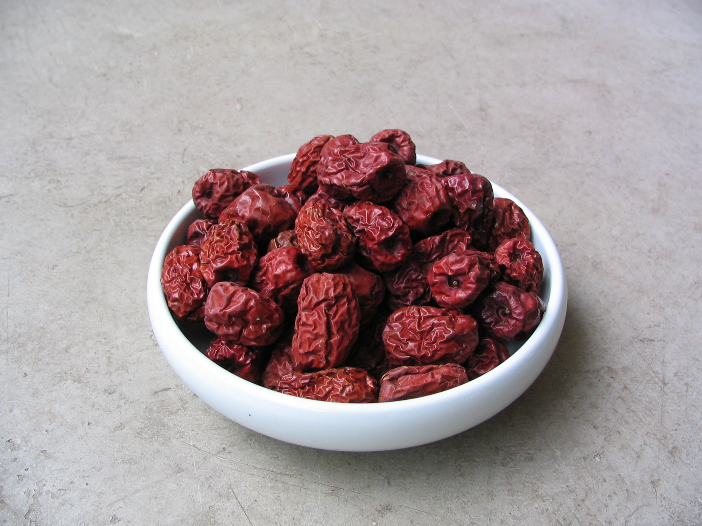

Eating
Many of the peculiar names for these dishes do not provide clues as to what types of food ingredients were used. However, judging from the listed seasonings they used for these dishes, such as pepper, ginger, soya sauce, oil, salt, and vinegar, Song era cuisine is perhaps not too different from the Chinese cuisine of today. Other additional seasonings and ingredients included walnuts, turnips, crushed Chinese cardamon kernels, fagara, olives, ginkgo nuts, citrus zest, and sesame oil
Regional differences in culture brought about different types of foods, while in certain areas the cooking traditions of regional cultures blended together; such was the case of the Southern Song capital at Hangzhou. After the mass exodus from the north, people brought Henan-style cooking and foods (popular in the previous Northern Song capital at Kaifeng) to Hangzhou, which was blended with the cooking traditions of Zhejiang. However, records indicate that already in the Northern Song period, the first capital at Kaifeng sported restaurants that served southern Chinese cuisine. This catered to capital officials whose native provinces were in the southeast, and would have found northern cuisine lacking in sufficient seasoning for their tastes.
In fact, texts from the Song era provide the first use of the phrases nanshi, beishi, and chuanfan to refer specifically to northern, southern, and Sichuan cooking, respectively. Many restaurants were known for their specialties; for example, there was one restaurant in Hangzhou that served only iced foods, while some restaurants catered to those who wanted either hot, warm, room temperature, or cold foods. Descendants of those from Kaifeng owned most of the restaurants found in Hangzhou, but many other regional varieties in foodstuffs and cooking were sponsored by restaurants. This included restaurants catering Sichuan cuisine that emphasized use of pepper, dishes and beverages from Hebei and Shandong, and coastal foods of shrimp and saltwater fish. The memory and patience of waiters had to be keen; in the larger restaurants, serving dinner parties that required twenty or so dishes became a hassle if even a slight error occurred. If a guest reported the mistake of a waiter to the head of the restaurant, the waiter could be verbally reprimanded, have his salary docked, or in extreme cases, kicked out of the establishment for good.
In the early morning in Hangzhou, along the wide avenue of the Imperial Way, special breakfast items and delicacies were sold. This included fried tripe, pieces of mutton or goose, soups of various kinds, hot pancakes, steamed pancakes, and iced cakes.Noodle shops were also popular, and remained open all day and night along the Imperial Way. According to one Song source on Kaifeng, the night markets closed at the third night watch but reopened on the fifth, while they had also gained a reputation for staying open during winter storms and the darkest, rainiest days of winter.
There were also some exotic foreign foods imported to China from abroad, including raisins, dates, Persian jujubes, and grape wine; rice wine was more common in China, a fact noted even by the 13th century Venetian traveler Marco Polo. Although grape-based wine had been known in China since the ancient Han dynasty Chinese ventured into Hellenistic Central Asia, grape-wine was often reserved for the elite. Besides wine, other beverages included pear juice, lychee fruit juice, honey and ginger drinks, tea, and pawpaw juice.
Dairy products and farming were foreign concepts to the Chinese, which explains the absence of cheese and milk in their diet. Beef was also rarely eaten, since the bull was an important draft animal. The main diet of the lower classes remained rice, pork, and salted fish, while it is known from restaurant dinner menus that the upper classes did not eat dog meat. The rich are known to have consumed an array of different meats, such as chicken, shellfish, fallow deer, hares, partridge, pheasant, francolin, quail, fox, badger, clam, crab, and many others.Local freshwater fish from the nearby lake and river were also caught and brought to market, while the West Lake provided geese and duck as well.
Common fruits that were consumed included melons, pomegranates, lychees, longans, golden oranges, jujubes, Chinese and Japanese quinces, apricots and pears; in the region around Hangzhou alone, there were eleven kinds of apricots and eight different kinds of pears that were produced. Specialties and combination dishes in the Song period included scented shellfish cooked in rice-wine, geese with apricots, lotus-seed soup, spicy soup with mussels and fish cooked with plums, sweet soya soup, baked sesame buns stuffed with either sour bean filling or pork tenderloin, mixed vegetable buns, fragrant candied fruit, strips of ginger and fermented beanpaste, jujube-stuffed steamed dumplings, fried chestnuts, salted fermented bean soup, fruit cooked in scented honey, and 'honey crisps' of kneaded and baked honey, flour, mutton fat and pork lard. Dessert molds of oiled flour and sugared honey were shaped into girls' faces or statuettes of soldiers with full armor like door guards, and were called "likeness foods" (guoshi).